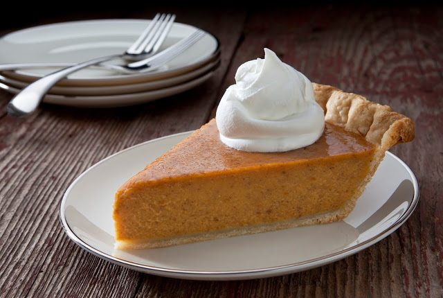

<
Deven's Pumpkin Pie

- 1(15 ounce) can pumpkin
- 1(14 ounce) can EAGLE BRAND® Sweetened Condensed Milk
- 2 large eggs
- 1 teaspoon ground cinnamon
- 1/2 teaspoon ground ginger
- 1/2 teaspoon ground nutmeg
- 1/2 teaspoon salt
- 1 (9 inch) unbaked pie crust
- Preheat oven to 425 degrees F. Whisk pumpkin, sweetened condensed milk, eggs, spices and salt in medium bowl until smooth.
- Pour into crust. Bake 15 minutes.
- Reduce oven temperature to 350 degrees F and continue baking 35 to 40 minutes or until knife inserted 1 inch from crust comes out clean.
- Cool. Garnish as desired. Store leftovers covered in refrigerator.